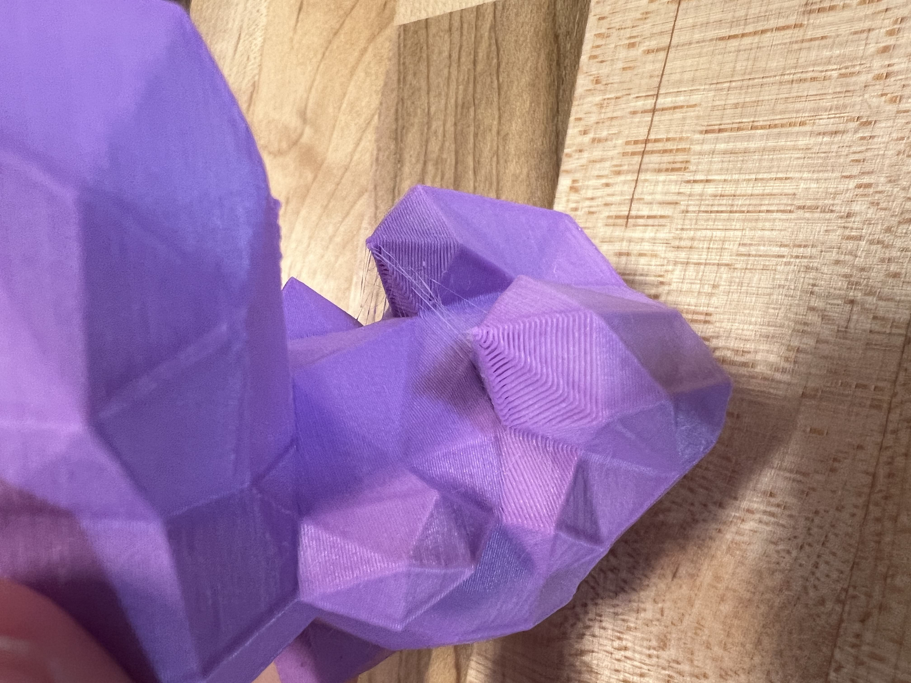

My Project Blog
A reflection on the various parts of my project.
Part 1: Nametag

The first stage of my project involved thorough planning. I spent a significant amount of time outlining the scope, setting milestones, and establishing a timeline. This part of the project was crucial as it set the foundation for everything that followed. I learned the importance of detailed planning and how it can prevent potential pitfalls down the road.
Part 2: Second Print: Stress Print-Yoshi

During the design phase, I focused on creating wireframes and prototypes for the project. This step allowed me to visualize the final product and make necessary adjustments before moving into development. It was an iterative process where I received feedback and refined the designs. This phase taught me the value of flexibility and iteration in the creative process.
Part 3: Development
The development phase was the most intensive part of the project. I worked on coding the project, building the core functionalities, and integrating the design elements. This part of the project reinforced my coding skills and also highlighted the importance of debugging and testing. It was challenging but also very rewarding to see the project come to life.
Part 4: Testing and Launch

In the final phase, I conducted extensive testing to ensure everything worked as expected. This included unit testing, integration testing, and user testing. After making the necessary adjustments based on feedback, I successfully launched the project. This phase was a great learning experience in ensuring quality and understanding the importance of user feedback.
Part 4: Testing and Launch

In the final phase, I conducted extensive testing to ensure everything worked as expected. This included unit testing, integration testing, and user testing. After making the necessary adjustments based on feedback, I successfully launched the project. This phase was a great learning experience in ensuring quality and understanding the importance of user feedback.
Part 5: Testing and Launch

In the final phase, I conducted extensive testing to ensure everything worked as expected. This included unit testing, integration testing, and user testing. After making the necessary adjustments based on feedback, I successfully launched the project. This phase was a great learning experience in ensuring quality and understanding the importance of user feedback.